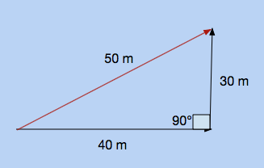
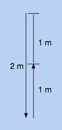

We've established the difference between vectors and scalars. However, there are other vectors and scalars besides displacement and distance. Two must-know's in physics are speed and velocity. As you know, speed is the rate as which distance changes with respect to time. You may have heard the term velocity, but not have known the difference between velocity and speed. Velocity is how displacement changes with respect to time.
Speed vs. Velocity
Let's say you walk forward 10 meters, then walk backwards 6 meters. It takes you 8 seconds to do this. We know that the distance traveled is 16 meters, and the displacement is 4 meters. If we want to find the speed and velocity, we divide the distance by time, or the displacement by time, respectively. Both speed and velocity use the unit meters per second, or m/s.

Positives and Negative Values for Velocity
Since vector values have direction, they can be positive or negative. Since speed only represents magnitude, it can only be positive. What is negative and what is positive depends on which way you define positive and negative. The convention in physics is that up, north, east, right, and forward are all defined as positive. Likewise, down, south, west, left, and backwards are all defined as negative. This holds true for displacement as well.

In the scenario above, the ball travels 6 meters to the right, and then 10 meters to the left. Since right is defined as positive by convention, the displacement is -4 meters. Therefore, the velocity is -.5 meters.
This interactive program allows you to see the relationship between speed and velocity. Click on the window, and use the arrow keys to move the circle around. Press start, and a clock will count out 10 seconds. At the top, you will see the average speed and velocity attained over 10 seconds, as well as the distance and velocity from the origin.
Notice how at any point in time, the average speed is the distance divided by time, and the average velocity is the displacement divided by time. This can most easily be seen at the end of 10 seconds.
Practice Problems
1. A ball falls 5 meters in one second. What are its average speed and velocity? Remember the conventions for positive and negative.
2. A woman jogs 40 meters, then doubles back and jogs for 80 meters. It takes her 12 seconds to do this. What are her average speed and velocity?
3. An athlete jumps to a maximum height of 2 meters. After they land, if their average speed is 4 meters per second, how long were they in the air for, and what was their average velocity?
4. Regarding the program, is it possible to have an average velocity that is positive while the ball is to the left of the starting point?
5. Regarding the program, is it possible to have an instantaneous velocity that is positive while the ball is to the left of the starting point?
6. True or False.
If the speed is positive, the velocity must be positive.
7. True or False.
If the velocity is positive, the speed must be positive.
8. True or False.
If the speed is 0, the velocity must be 0.
9. True or False.
If the velocity is 0, the speed must be 0.
10. (Challenge) A rowdy teenager drives 20 meters to the right. In a display of his car's reversing capabilities, he suddenly speeds backwords 50 meters. At the end of his stint, if the difference between the average velocity and average speed is 80 meters per second, what is his average speed and velocity, and how long does the stint last?
Practice Answers
1.
Speed: 5 meters per second
Velocity: -5 meters per second
It travels 5 meters, so that is its distance. It falls down 5 meters, so the displacement is -5 meters by convention. To find the speed and velocity, divide the distance and displacement by time, respectively.
2.
Speed: 10 meters per second
Velocity: -3.33 meters per second
First find the distance and displacement. The distance is 120 meters, while the displacement is -40 meters. Then divide both by 12 seconds, to get average speed and velocity.

3.
Time: 1 second
Velocity: 0 meters per second
The athlete jump up to two meters, so by the time he lands, he has traveled 4 meters. We want to solve for time, and we know speed and distance. Since speed is distance over time, time is distance over speed. Dividing 4 by 4 gives us one second. Since the athlete ends up where he started, his displacement is 0, and therefore his velocity is zero.

4.
Distance: 70 meters
Displacement: 50 meters
The boy travels 40 meters, then 30 meters. Therefore, the distance is 70 meters. However, he turns at a 90 degree angle. You can find the total displacement by drawing a right angle and solving for the hypotenuse.

5.
Distance: 3 meters
Displacement: 1 meters
It falls for two meters, then bounces up for one meter before caught. Therefore, the distance is 3 meters. However, the ball rises for one meter in the opposite direction that it fell in, so its displacement is 3 - 1 = 2 meters.

6.
Distance: Infinite
Displacement: 326 units
There is no limit to the distance. If you move back and forth, the distance traveled will just keep on rising. However, the ball cannot move outside of the screen. This limits the distance between the ball and the origin. The farthest possible distance away from the center can be found in any of the four corners, which will give you the number "326".
7.
Distance: 15 kilometers
Displacement: 14.55 kilometers
It travels 10 km, then 5 km. Therefore, its distance is 15 km. For its displacement, we have to take the 30 degrees into consideration. Draw a triangle where one leg is 10 km, and another is 5 km. The angle between them should be 150 degrees, because 30 degrees off course means 30 degrees from a 180 degree angle. Then use the law of cosines to solve for the final side, which is displacement.